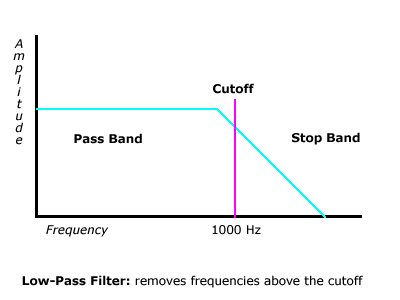
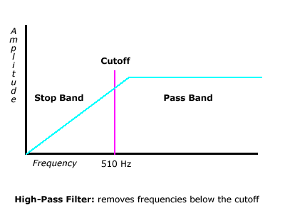
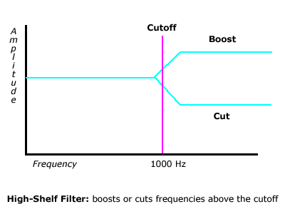
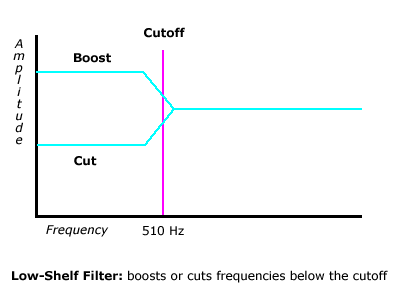
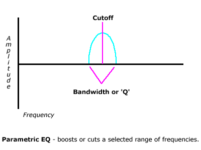

Topics:
Most of you have seen filters as the Treble and Bass settings on a home stereo, as well as more detailed tone controls called graphic equalizers, in a car stereo system. In this topic we'll talk about some of the more specialized tools used in music production.
The tools we'll use to process spectrum are called filters. As the name implies, filters are used to allow some frequencies to pass while reducing or eliminating the levels of others. As we'll see, some types of filters allow us to boost as well as cut a given range of frequencies. The range of frequencies affected by a filter is determined by the cutoff frequency. Much like the threshold in a dynamics processor that determines when a signal is affected, the cutoff frequency determines what part of a signal's spectrum will be processed.
We'll be looking at three general categories of filters. As we'll see, different types of filters will have their own sets of controls.
| Filter Type | Filter Name | Function | Controls |
|---|---|---|---|
Cutoff
Filter |
Low Pass | Filters frequencies above the cutoff | • Cutoff frequency |
| High Pass | Filters frequencies below the cutoff | ||
Shelving
Filter |
High Shelf | Boosts or cuts frequencies above the cutoff | •
Cutoff frequency |
| Low Shelf | Boosts or cuts frequencies below the cutoff | ||
Parametric |
Parametric EQ | Boosts or cuts frequencies around the cutoff | •
Cutoff frequency |
Once again, like dynamics processors, when we use a filter, it will be applied directly in the path of a signal, so we'll use it as a channel insert-type effect.
Cutoff filters are used to remove frequencies above or below a cutoff frequency. Although these are typically found in synthesizers, they are now being being used in music production as well, and are common in many EQ plug-ins.
The cutoff frequency determines when the filter becomes active and is generally the only parameter we can adjust. The frequencies being processed are divided into two ranges, or bands, that will either be removed or allowed to pass. Frequencies that are not affected are part of what we call the pass band since they are allowed to "pass through" the filter unaffected, while frequencies that are removed are part of the stop band.
These filters get their names from their pass bands, or the range of frequencies that are unaffected.
This can be somewhat confusing and may take some getting used to since the range called out in the name is the opposite of the range being reduced.
Got it! This will become much clearer once we look a some examples.
One important thing to remember about filters is that they reduce a range a frequencies gradually. Let's say we've set a low-pass filter to remove frequencies above 1000Hz. This means that the filter will start reducing the level of frequencies at 1000Hz. In the diagrams below you'll notice that the level of frequencies in the stop band are reduced starting just before cutoff, and they are not entirely removed until sometime later.
Since low- and high-pass filters are essential parts of a synthesizer, we'll take a closer look at cutoff filter slope in a future lesson.
Take a look at the diagrams below to get a general sense of how these filters work.


A shelving filter will boost or cut frequencies above or below a cutoff. This adds an additional level of control to the cutoff filters we just looked at by allowing us to either increase or decrease a range of frequencies by varying amounts.
As we said earlier, this type of filter is commonly found in everything from home stereos to guitar amplifiers. One important distinction, though, is that in consumer and musical instrument applications, the cutoff frequency is fixed. We can't change it, and in most cases we don't know where the cutoff frequency is. So, "treble," although commonly understood to mean "high frequencies," can actually be anywhere above 5 or 6kHz. Shelving filters used in desktop production will always let you adjust the cutoff frequency. You'll notice from the diagrams below that there's a slope getting to the range of frequencies defined by the cutoff.
These diagrams show the response curves for low and high-shelf filters:


A parametric EQ can boost or cut frequencies in a range both above and below a cutoff frequency. When we listen to the sound of a recorded instrument, there's usually a limited range of frequencies that need to be boosted or cut. Since a parametric EQ allows us to focus on a particular frequency range, it's perhaps the most useful type of filter in desktop production.
The range of frequencies around the cutoff that are affected by a parametric EQ is called the bandwidth or "Q" of the filter. This can be adjusted to perform different types of tasks. A narrow "Q" can be used to remove a particular frequency such as the 60Hz hum caused by outside electrical interference in the audio signal. A wider "Q" is used to adjust a general range of frequencies, as might be the case if we wanted to clarify a recording that sounder muddy or muffled.
The parametric EQ is, in a sense, the next step on the evolutionary scale of filters we've looked at so far. As a review, let's look at a roundup of filter types and the parameters available in each.
| Control | Filter Cutoff | Amount of Boost or Cut | Bandwidth |
|---|---|---|---|
| Cutoff
Filter |
YES |
NO |
NO |
| Shelving
Filter |
YES |
YES |
NO |
| Parametric
EQ |
YES |
YES |
YES |
Take a look at the diagram below to see the response curve of a parametric EQ.

Most people are familiar with a graphic EQ from their home or car stereo system. A graphic EQ allows us to boost or cut multiple ranges or bands of frequencies. These bands are defined by center cutoff frequencies much like what we saw in a parametric EQ. However, unlike a parametric EQ, the center frequencies and bandwidth in a graphic EQ are fixed and can't be adjusted.
The equalizers we've looked at in this topic are generally more useful for music production since they allow us to focus on a particular range of frequencies in a recorded track. A graphic EQ is a more generalized tool, well-suited to adjusting the overall tonal balance of music being played through a particular set of speakers in a given room.
The following example shows the graphic EQ in Apple's ITunes. This is a 10-band EQ on which the bands are set up to correspond to musical octaves. Notice that the center frequency for each successive band is double that of the previous one. A 10-band EQ will divide the entire range of human hearing into ten octaves. (More on octaves in a later lesson!) This is typical of what you'll find in home and semi-pro applications.
Graphic equalizers are common in all types PA systems. Since the size and shape of a room will make certain frequencies more pronounced, a graphic EQ is useful in compensating for this. By cutting bands of frequencies that resonate in a room, we can balance the sound coming from speakers, so it won't sound boomy or cause feedback. In higher end applications like club and concert sound systems, a graphic EQ will often have 30 bands and is commonly referred to as a 1/3 octave EQ.
Many people use the graphic EQ in their car stereo systems to "crank up" the low end, adding a boomy, thumping ambience to the streets of many urban areas. However, as these music lovers get older, they may find a need to boost the midrange frequencies around 2-4KHz so that they can hear speech clearly above traffic noise!
Figure 4.39. The 10-band graphic EQ found in Apple's ITunes 2
Figure 4.40. Klark-Teknik 30-band, 1/3 octave graphic EQ, commonly found in many club and concert PA systems